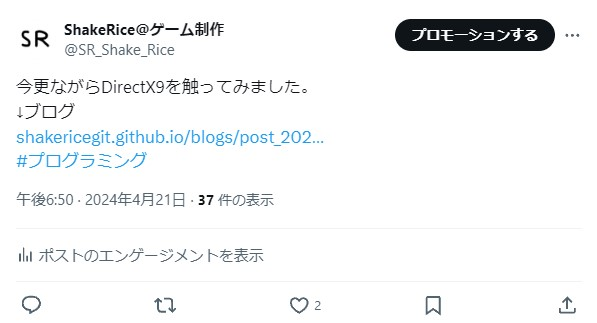

自作サイトをTwitterにシェアした際にアイキャッチ画像を表示する方法
↓Twitterでブログを宣伝した際の実際の投稿

これだとまったく目を引かないし、人によっては怪しいサイトだと思われても仕方がない。
そこで、もっと目を引かれやすくするための「アイキャッチ画像」を表示する方法を紹介します。
アイキャッチ画像を設定する方法
やることは簡単。
headタグの中に以下のコードを入れて設定するだけ。
<meta property="og:title" content="Twitterに表示するブログのタイトル">
<meta property="og:url" content="記事のURL">
<meta property="og:image" content="アイキャッチ画像(サムネイル)">
<meta name="twitter:card" content="アイキャッチ画像の大きさの設定">
<meta name="twitter:site" content="@TwitterのID">
「twitter:card」について
「twitter:card」の設定にはカード種類には
- summary
- summary_large_image
- app
- player
の4種類があります。
「summary」はデフォルト。「summary_large_image」は大きめに表示。
「app」はアプリ配布用、「player」は動画配信用らしいです。 (使ったことないけど)
実際の投稿
今更ながらDirectX9を触ってみました。
— ShakeRice@ゲーム制作 (@SR_Shake_Rice) April 21, 2024
↓ブログhttps://t.co/dgWJSrkMwG#プログラミング
2024/04/28
ブログ記事一覧に戻る